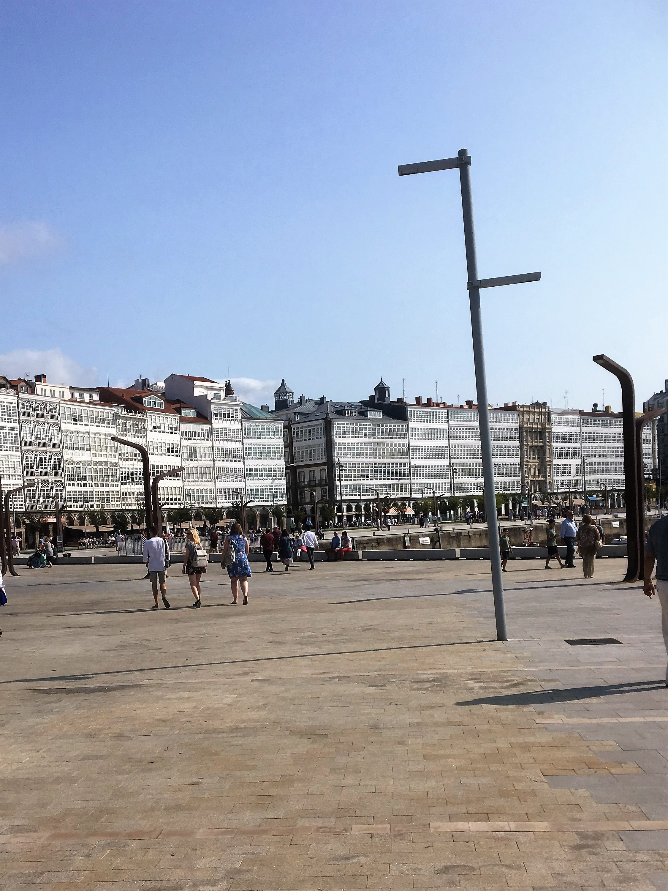

Britannia Cruise 2017
Wednesday September 6th 2017
We arrived in La Coruna, the provincial capital of the autonomous region of Galicia, at 8.00am, having
steamed a total distance of 354 nautical miles from Southampton. It is known as the "Crystal City" because of the glass-enclosed
balconies which grace the tall apartment buildings facing the harbour. Apparently, the Iberians were the indigenous race, displaced
by the Celts. Bagpipes are traditional, and some local dances bear a resemblance to Scottish reels. It was sacked and razed by the
Moors in the 12th Century, but had recovered sufficiently to receive John of Gaunt, Duke of Lancaster, when he landed in 1356 to claim
the crown of Castille. It was the final assembly point for the Armada in 1588, and just beat off an attack from Francis Drake the next
year.
It has one famous landmark, the Torre or Lighthouse of Hercules. It is thought to have originated in Celtic times,and is situated
on the top of the promontory. It was rebuilt in the second century A.D. and was renovated in 1791, when Charles III gave it its present
square shape. It is the only Roman lighthouse still in operation. It is, with Vigo, one of the ports from which it is easy to visit
Santiago de Compostela. Both Mum and I had been there - Me when Interrailing and Mum when cruising on the Minerva with Dad. We decided
against a repeat visit.
Mum and I got off the ship and wandered into La Coruna along the Avenida de la Marina, with the glass-enclosed balconies, and along one
of the narrow streets, crammed with all sorts of little shops. Once Mum was safely back on board, I went off again, and bought us a
couple of bottles of wine to drink in our suite after dinner. The All on Board time was 3.30pm. Just before then, the reception desk
started asking for people to ring 5000 to say they were on board. By 3.35pm, a very cross sounding Captain was demanding Daniel Luna
say he was on board. We eventually set off at 3.45pm. I hope Daniel got a good telling off.
On the Lido deck by the pools, the Sail Away party was in full swing, with the entertainment team leading the singing. We could hear it
from our balcony. Sweet Carolina seemed very popular. The only saving grace was there was no Agadoo or Birdie Song played.
Thursday September 7th 2017
Today was a day at sea, heading south to Madeira. The activities available were itemised in the daily Horizon newsletter. The day started
at 7.15am with a free Total Body Conditioning fitness class in the Gym on Deck 17. After that you could, amongst a host of things,
choose:- A Silent Quiz by the Lido Pools; Adult quoits and table tennis competitions; Line dancing; Bingo; a Blackjack tournament in
Brodie's casino; a film in the Cinema; a Corsage and Buttonhole class with the onboard Florist in the Crow's Nest or an adult colouring
for mindfulness session. There were also ballroom dancing classes with Ian and Penny in the Crystal Room on Deck 7. Every time I read
that, my mind was filled with pictures of Barry and Yvonne Hargreaves from Hi-Di-Hi.
We did have visitors on board. Rob Brydon and a film crew were filming the latest P&O TV commercial. We had been warned in advance that
areas of the ship would be temporarily out of bounds, and given the opportunity to be extras. Mum and I declined the opportunity. In the
early evening today, they were filming at the back of the boat on Deck 7. Rob did come around and wave to all of us on the starboard side,
who were watching them film from our balconies.
This evening was our second black Tie evening, and was celebrating the fact that the Senior chefs had been inducted into the
prestigious Chaine des Rotisseurs, an international Association of Gastronomy.